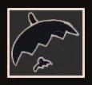
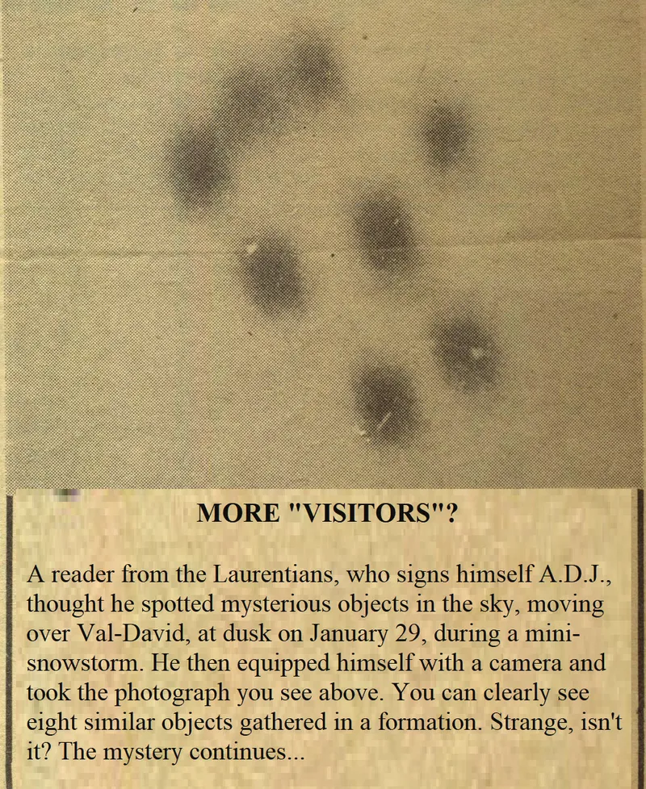
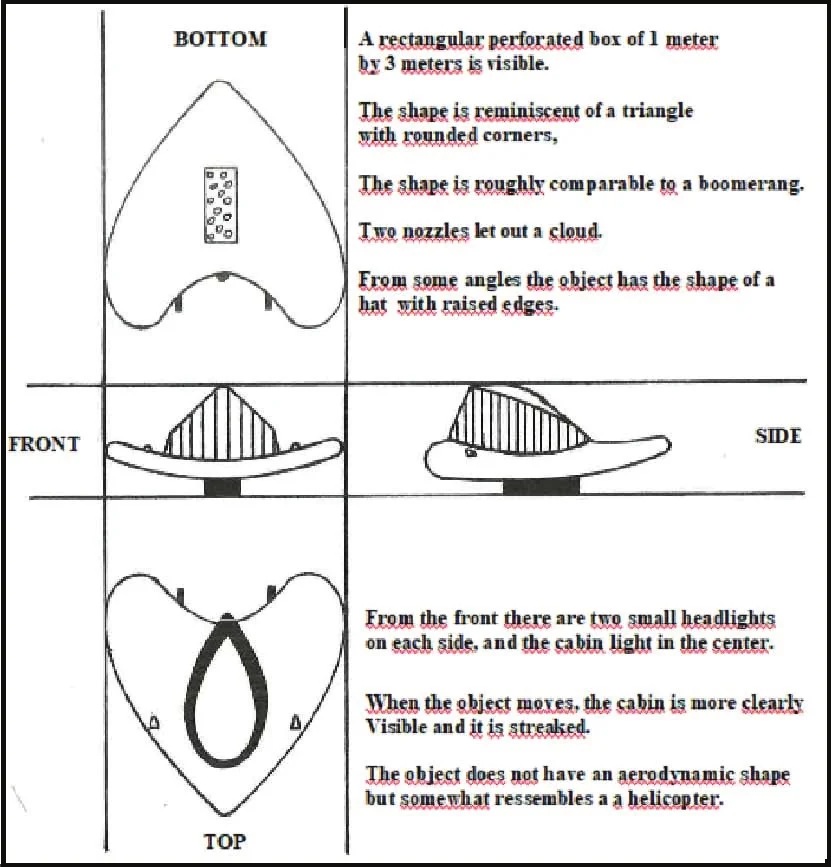
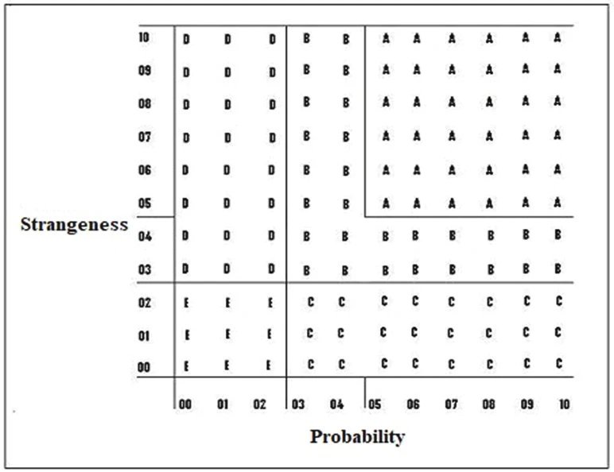
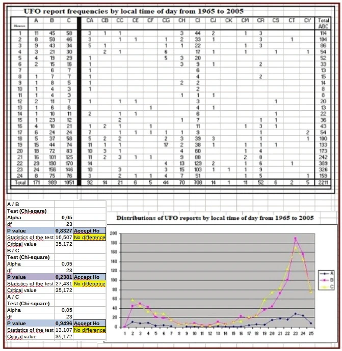
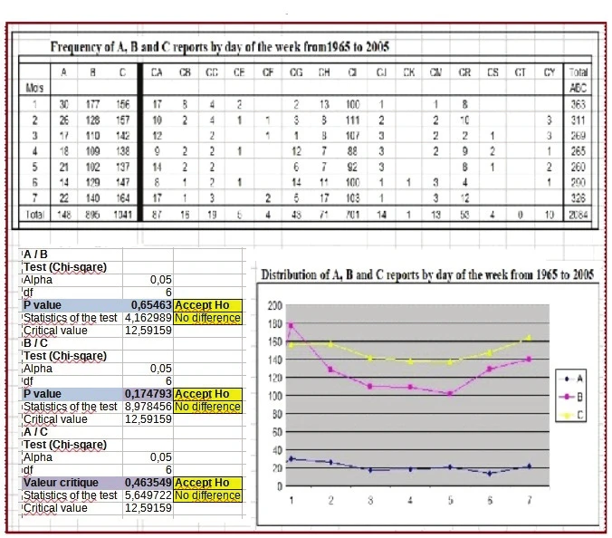

Une fois documentée verbalement, une observation d'ovniLe mot « UFO » (ovni) sera employé comme nom commun. racontée par un observateur se présente comme un récit dont l'auteur est un enquêteur. Elle prend généralement la forme d'un rapport d'allure scientifique. Les techniques actuelles d'évaluation des récits d'ovnis satisfont de différentes façons aux critères de valeur de l'information d'un document scientifique, comme le montre leur revue. Il est néanmoins intéressant de comparer trois techniques ufologiques simples et, pour ce faire, trois exemples d'application sont comparés. En conclusion, les trois techniques se révèlent complémentaires. En outre, chacune peut servir de modalité d'échantillonnage et permettre la comparaison de groupes de récits d'observation. Par exemple, on peut comparer des séries temporelles issues de groupes de récits de valeurs différentes. Il apparaît que les séries temporelles des groupes de récits comparés sont indiscernables. Comment est-ce possible ?
Dans le domaine de l'ufologie, le récit d'observation devient la donnée première puisqu'il contient, en principe, la description d'un phénomène inexplicable après vérification. Mais c'est aussi son talon d'Achille, puisque le témoignage d'un observateur est subjectif et le rapport de l'enquêteur une affaire de jugement. L'expérience suggère que l'observateur lui-même révèle rarement son récit directement au grand public. Un récit d'ovni prend presque toujours forme à la suite du travail d'un enquêteur ou d'un journaliste, et s'inscrit donc dans un processus. La fiabilité du récit et de l'observateur doit être abordée en tenant compte du fait qu'une banalité peut prendre plus d'importance que l'observateur ne le pensait, ou à l'inverse qu'une étrangeté qui l'a impressionné peut se révéler insignifiante. En général, les cas sont classés comme méprise : telle vision, engin militaire secret, canular, conviction religieuse, tromperie, et bien sûr comme ovni. Juger le récit dépend de la fiabilité de plusieurs sources, dont la réputation de l'observateur (qualité de l'information initialement racontée) et de l'enquêteur (reconstruction de l'information), ainsi que de la pertinence de l'information fournie par le média. Pour trier les récits et évaluer leur validité, les chercheurs ont élaboré divers critères de fiabilité.
L'indice d'information de Poher, de même que le GEPANGEPAN: Note technique N° 13 – Recherche Statistique d'une Typologie Identifiée/Non Identifiée, GEPAN-CNES, Toulouse (France), , section 3 [Groupe d'étude des phénomènes aérospatiaux non identifiés], décrivent les éléments d'un rapport complet tels que : date, heure, lieu, nombre d'observateurs, etc. MUFON-FranceMUFON France: Expertise et Classification d’un Phénomène: Support de Cours n°5 Concernant la Phase Finale de l’Enquête qui Conduit à la Classification d’un Phénomène, intègre des degrés d'étrangeté ; un indice de confiance y est aussi appliqué. Par ailleurs, Ballester et GuaspBallester-Olmos, V. J. and Guasp, M.: Los OVNIs y la Ciencia, Plaza & Janés, S. A., Barcelona (Spain), , , pp. 117-135Groff, Terry: Ballester-Guasp Evaluation of Completed Reports, on-line Javascript calculator based on the Ballester-Guasp evaluation system as the official report evaluator of the MUFON’s Case Management System (CMS) ont mené un travail exhaustif en introduisant une formule complexe qui tient compte d'indices de confiance, de crédibilité et de fiabilité, dont la maturité des observateurs et les circonstances de l'observation. À la longue, certaines informations se révèlent de peu de valeur et ne sont pas privilégiées par les chercheurs. On examinera les apports de trois techniques simples, dont celles de Hynek,Hynek, Allen: The UFO Experience: A Scientific Inquiry, Henry Regnery Company (Chicago), , p. 24 de Randles et WarringtonRandles, Jenny and Warrington, Peter: UFOs: A British Viewpoint, Robert Hale Ltd. (London), , p. 167 et de Vallee.Vallee, Jacques: Confrontation: Un Scientifique à la Recherche du Contact avec un Autre Monde, Robert Laffont (Paris), Les énigmes de l’univers, , pp. 309-311. (U.S. edition: Confrontations: A Scientist's Search for Alien Contact. New York: Ballantine Books, .) Les exemples appliqués à trois récits d'ovnis sont discutés ci-dessous. Les récits d'ovnis présentés ici viennent du Québec ; la possibilité d'y enquêter davantage est éteinte et les informations utiles ont été consolidées. Les commentaires auront une portée générale.
Il ne s'agit pas ici de présenter le cas en détail, mais de décrire brièvement l'application de la technique de Hynek, qui propose deux critères pour chaque récit d'ovni.
D'abord, l'indice d'étrangeté (E), d'après le mot français « étrangeté », rend compte de la quantité d'informations qui ne s'expliquent pas facilement en termes de mouvement, de forme, de luminosité, d'effet physique, etc. En théorie, chaque unité d'information correspond à un élément qui résiste à une explication satisfaisante. Si E = 10/10, les éléments restent totalement incompréhensibles. À l'inverse, si E = 0/10, rien d'étrange n'apparaît et une explication complète et claire des éléments est disponible. Hynek attribuait E = 3/10 pour trois éléments d'information qui défient l'explication. Cette valeur constituait le seuil d'un récit d'observation de bonne qualité pour la recherche scientifique.
Le second critère, l'indice de probabilité (P), rend compte de la quantité d'informations qui donnent du crédit au récit, comme l'expérience de l'observateur dans ce contexte ou l'existence d'observateurs indépendants. Si P = 10/10, on est « certain » de l'exactitude et de la fiabilité de toutes les informations. Si P = 0/10, on ne peut rien croire de ce qui est raconté. Hynek fixait un plafond de P = 3/10 pour un récit fait par une seule personne jugée crédible et fiable.

Le cas s'est produit à Châteauguay (Montérégie)Cas CASUFO© n° 1612. à 21 h 30 le , pendant 10 secondes : un enseignant aperçoit deux objets ressemblant à des chauves-souris. Ils paraissent noirs, semblent recouverts de métal et ont à peu près la taille de la Lune. Le second objet est légèrement plus haut que le premier. Les deux objets traversent le lac Saint-Louis à basse altitude, en silence, jusqu'à ce que l'observateur les perde de vue dans l'obscurité du ciel. Comment interpréter ce récit ? S'agissait-il d'engins effectuant une surveillance, ou peut-être liés à la fameuse contrebande sur ce plan d'eau à l'époque ? Des cerfs-volants auraient-ils trompé l'observateur ? Par coïncidence, une émission de télévision intitulée Legends of the Superheroes mettant en scène Batman et Robin a été produite la même année. Aurait-il pu s'agir d'une plaisanterie de l'enseignant à cette occasion ?
Quand un observateur d'ovni contacte directement les médias, l'information est souvent traitée de deux façons courantes. D'abord, avec un média réputé, dit « sérieux », et son processus éditorial, le traitement est habituellement une dévalorisation conforme à la pensée dominante qui expose l'observateur d'ovni au jugement public. À l'inverse, avec un média plus léger ou simplement mercantile, la présentation est souvent sensationnaliste. Quelle est la valeur d'un cas donné ? Il ne s'agit pas ici de présenter ce cas en détail, mais plutôt d'examiner brièvement l'application de la technique de Randles et Warrington.
- Niveau A : un rapport qui a fait l'objet d'une enquête sur place par des enquêteurs expérimentés.
- Niveau B : les enquêteurs ont interrogé le ou les témoins, mais sans aucune enquête ultérieure sur le cas.
- Niveau C : le témoin a seulement rempli un formulaire standard de signalement d'ovni d'un type ou d'un autre. Aucun entretien n'a été mené.
- Niveau D : le rapport consiste uniquement en une forme de communication écrite du témoin.
- Niveau E : le rapport repose sur des informations de seconde main (comme un article de journal). Il n'y a eu absolument aucune enquête ultérieure.Randles, Jenny and Warrington, Peter: UFOs: A British Viewpoint, Robert Hale Ltd. (London), , p. 167Randles, Jenny: UFO Reality: A Critical Look at the Physical Evidence, Robert Hale Ltd. (London), , p. 54
Feu le journaliste André Rufiange a écrit l'encadré suivant dans le Journal de Montréal du :

Plusieurs questions se posent faute d'informations. La photographie a-t-elle été prise à travers la fenêtre d'une maison ou un pare-brise ? Les mouvements des objets vus à l'œil nu étaient-ils rapides ou lents ? Quels étaient l'angle d'élévation, la taille apparente et la distance possible ? S'agit-il d'une photographie en couleur ?
Pourrait-il s'agir d'un flocon de neige éclatant en gouttelettes d'eau sur la surface de verre de l'objectif de l'appareil, ce qui expliquerait
le flou de la mise au point ? La photographie a-t-elle été recadrée ? Dans la légende sous la photographie,
pourquoi Rufiange écrit-il « objets » ? Pourquoi écrirait-il The mystery continues
(le mystère
demeure) ? Lequel ? Avec son titre accrocheur, le texte sert certainement à vendre le journal. Pour ce cas,Cas CASUFO© n° 404. on peut attribuer les valeurs suivantes :
Ce récit est beaucoup plus difficile à expliquer. Il ne s'agit pas ici de présenter le cas en détail, mais de rendre brièvement compte de l'application de la technique de Vallee.
| S (fiabilité de la source) | V (visite ou non des lieux) | P (probabilité d'explications naturelles) | |
|---|---|---|---|
| 0 | Source inconnue, ou source non fiable. | Pas de visite des lieux, ou réponse inconnue. | Les données sont compatibles avec une ou plusieurs causes naturelles. |
| 1 | Source de fiabilité inconnue. | Visite par une personne de passage peu familière de ce genre de phénomènes. | Une explication naturelle n'exige qu'une légère altération des données. |
| 2 | Source crédible, de seconde main. | Visite par une ou des personnes familières d'une gamme de phénomènes. | Une explication naturelle exigerait une altération grossière d'un paramètre. |
| 3 | Source crédible, de première main. | Visite par un enquêteur fiable ayant une certaine expérience. | Une explication naturelle exige une altération grossière de plusieurs paramètres. |
| 4 | Entretien personnel de première main avec le témoin, par une source de fiabilité éprouvée. | Visite par un analyste compétent. | Aucune explication naturelle n'est possible, compte tenu des éléments. |
Cette intéressante observation a eu lieu le , de Cas CASUFO© n° 1705.Blaquière, Philippe and Leduc, Marc: Une Sorte de Raie, UFO-Québec, double issue 21-22, , p. 11 : une famille de trois personnes rentre en voiture à Sorel après avoir dîné à Drummondville. Le trajet de retour les fait passer par Pierreville, Yamaska et Sainte-Victoire. C'est sur le chemin nord de Yamaska que la mère (36 ans), le père (45 ans) et le fils (10 ans) observent un ovni situé près d'un arbre dont ils s'approchent. C'est un objet blanc, triangulaire, qui paraît transparent et lumineux comme un diamant. Probablement par inattention, les observateurs perdent de vue la source lumineuse, et quand la voiture arrive près de l'arbre, l'objet n'y est plus. Il semble possible que la lumière ait été au départ beaucoup plus éloignée de l'arbre que les trois observateurs ne le croyaient.
Au bout du chemin, la source lumineuse redevient visible, apparemment immobile au-dessus de la rivière Yamaska, mais soudain elle s'éteint sur
place. Aucun d'eux ne s'en inquiète outre mesure, jusqu'à ce qu'ils arrivent sur le rang Saint-Louis près de
Sainte-Victoire, où le jeune garçon observe le triangle de lumière beaucoup plus près que lors des deux
observations précédentes, et à une altitude nettement plus basse. Le garçon utilise alors des jumelles 20×50. La
mère demande à son mari d'arrêter la voiture. Quand ils s'arrêtent, le triangle lumineux se trouve sur leur gauche,
immobile à une altitude de 70 à 100 mètres. Soudain, l'objet triangulaire émet une sorte d'éclair vers le bas,
comme un néon blanc qui n'atteint pas le sol. L'éclair apparaît comme un rideau de lumière plus étroit que le
triangle, nettement délimité, qui descend de l'objet jusqu'à environ 3 ou 4 mètres du sol. Le rideau de lumière
apparaît pendant une dizaine de secondes, tandis qu'il en émane un crépitement électrique. Un instant plus tard,
le triangle, situé à 30 mètres, s'approche lentement. Pendant cette approche, le rideau de lumière s'estompe
lentement, indépendamment du triangle qui l'émet. À leur stupéfaction, l'objet triangulaire se déplace
instantanément en paraissant se dématérialiser et se matérialiser. On l'observe à un endroit, mais en une fraction
de seconde il apparaît soudain à environ 2 kilomètres de distance. Le garçon s'écrie : Maman, il y en a
deux !

La famille reprend la route tout en surveillant l'ovni autant que possible. Ils regardent par la fenêtre l'ovni
qui s'approche de leur véhicule. Au bout d'environ 8 minutes, le triangle prend l'apparence de trois phares, tout
en avançant lentement vers la voiture en zigzaguant. À ce moment, il est peut-être à 20 mètres de la voiture, qui
s'est de nouveau arrêtée. L'objet change de cap sans modifier sa vitesse, inférieure à celle d'une personne qui
marche. À ce moment, la mère est persuadée que l'objet n'est pas d'origine terrestre, alors que l'objet n'est plus
un triangle aux coins arrondis, mais s'incline et prend l'apparence d'une masse métallique semblable à un chapeau.
Entre-temps, et malgré leur grande agitation, les observateurs sortent de la voiture. Le mari se tient près de la
portière côté conducteur, tandis que la mère marche dans une zone côté passager, et le garçon est le plus éloigné
de la voiture. L'ovni porte sous lui une boîte rectangulaire de 1 mètre de long et 30 centimètres de large. Cette
boîte est percée d'ouvertures rondes, rouges et phosphorescentes. La mère se souvient tout particulièrement de ce
moment précis, où l'ovni est à environ 10 mètres au-dessus d'eux, pour affirmer que l'objet ne pouvait être un avion ou un hélicoptère d'aucune sorte. Pendant ces moments de
tension extrême, et à leur stupéfaction, tous trois entendent un bruit semblable à celui d'un avion à réaction
passant à très haute altitude. Le père déclare : C'est un jet.
Le jeune garçon réplique aussitôt : Non,
c'est un boomerang.
La mère reste silencieuse : pour elle, on parlerait de soucoupe volante. L'objet reste immobile, bien que les
observateurs ne puissent préciser le temps écoulé à ce moment. L'objet s'éloigne ensuite lentement, de la même
façon qu'il s'était approché. Au bout d'un moment, les témoins ne voient
plus l'objet, mais ils l'entendent encore dans la nuit claire et froide. Les trois personnes discutent alors de
l'expérience avec une grande agitation pendant 5 ou 6 minutes ; le père expliquera plus tard aux enquêteurs qu'il
voulait calmer les émotions de sa femme et de son fils en essayant de les persuader que ce n'était qu'un
avion.
Ensuite, le mari et le fils remontent les premiers dans la voiture. Alors que la mère saisit la poignée de la portière, elle observe soudain l'ovni qui se déplace lentement, en position perpendiculaire, vers la voiture. Un instant, elle est intriguée par un petit phare sur le côté gauche de l'objet, qui plane majestueusement à une altitude d'environ 10 mètres. La taille de l'objet est estimée supérieure à celle de la voiture, à environ 7 ou 8 mètres. Deux tuyères libèrent un nuage au-dessus de la voiture. La mère est stupéfaite, mais n'a pas peur. L'objet tourne un peu vers la droite. Il fait une sorte de bond, si bien que la mère observe le phare du dessus, au centre, et ce qui semble être une cabine avec ce qu'elle interprète comme des barreaux verticaux. Vue de côté pendant un mouvement, la cabine est nettement striée, mais elle n'y voit personne. La masse métallique de l'objet paraît en aluminium gris. L'objet perd de l'altitude en s'éloignant et descend à 3-4 mètres du sol. Il n'atterrit pas, bien que la mère stupéfaite s'attende à cette conclusion. Il reprend de l'altitude en s'éloignant vers l'horizon, en clignotant en rouge. Sous un certain angle, l'objet a la forme d'un chapeau à bords relevés et, à l'avant, il y a deux petits phares, un de chaque côté. Les témoins reprennent la route en direction d'une caravane où vit un oncle, à Sainte-Victoire. À l'entrée du chemin qui mène à la propriété de l'oncle, ils remarquent une petite boule lumineuse rouge qui flotte autour de la caravane. Ils quittent les lieux en hâte et rentrent directement chez eux.
Il y a un aérodrome pour petits avions à Sainte-Victoire, mais les témoins rejettent vigoureusement la
possibilité d'un petit avion. Plus tard, la mère décrit l'objet en le comparant à une raie, ces animaux plats
comme des oiseaux au fond de l'océan
. Par la suite, la mère et son fils font régulièrement des cauchemars
liés à cette expérience, et le garçon saigne parfois du nez. Une tache ayant la forme de l'ovni apparaît sur la
cuisse gauche de la mère ; les enquêteurs ne peuvent toutefois pas le vérifier, bien qu'un médecin ait été
consulté. Par la suite, la mère se met à lire de nombreux livres sur les ovnis.
Dans ce cas, on peut attribuer les valeurs suivantes :
Une technique d'évaluation de la fiabilité de l'information d'un récit peut être considérée comme une échelle ordinale qui situe les récits les uns par rapport aux autres sans quantifier leurs distances respectives. Elle peut servir de modalité d'échantillonnage et permettre de constituer des groupes de plusieurs récits d'observation de valeurs diverses. Prenons les critères de Hynek, avec lesquels on peut placer les récits d'ovnis sur deux échelles de valeur, et même déterminer s'ils atteignent un seuil critique, peut-être une valeur de 3/10 ou de 5/10, selon les besoins de l'échantillon de récits et des groupes de comparaison.
Cela introduit la Cote sélective d'appréciation (CSA)Leduc, Marc: Cote Sélective d’Appréciation (CSA) des Signalements Ovniens, CASUFO©, Editions Garpan (Québec), des récits d'observation, construite avec les critères de Hynek. Dans le tableau 2 ci-dessus, on utilise les critères d'étrangeté (S) et de probabilité (P), ainsi que les seuils de 3/10 et de 5/10. On obtient ainsi des échantillons de récits de qualité variable. Les récits cotés A et B peuvent être comparés aux récits cotés C pour répondre à des questions sur le phénomène ovni. S'il existe un phénomène inexplicable qui se distingue des méprises, il pourrait émerger de ces comparaisons. La CSA peut prendre la forme d'une synthèse graphique comme dans le tableau 3.
| Cote CSA | P Hynek | E Hynek | Valeurs d'échantillon pour les cotes A, B, C, D et E |
|---|---|---|---|
| A | ≥ 5 | ≥ 5 | Les récits cotés A représentent le véritable échantillon dans CASUFO©.Banque de 3 000 récits, dont une sélection utile de 1 500, chacun codé dans plus de quatre-vingts champs. |
| B | ≥ 3 | ≥ 3 | Les récits cotés B sont un échantillon qui n'est pas entièrement expliqué dans CASUFO©. |
| C | ≥ 3 | < 3 | Bien que fiable, un récit coté C représente une méprise, un cas explicable ou une fausseté. C'est un groupe témoin dans CASUFO©. |
| D | < 3 | ≥ 3 | Les récits cotés D sont des rumeurs insolites dans CASUFO©, dont la probabilité (crédibilité, fiabilité) est trop faible. |
| E | < 3 | < 3 | Les récits cotés E sont un échantillon qui n'est pas plus insolite que fiable. L'information fait presque entièrement défaut. |
Les récits cotés C (c'est-à-dire avec P supérieur ou égal à 3/10 mais E inférieur à 3/10) sont en principe fiables mais expliqués. Ils constituent une sorte de groupe témoin. Ainsi, l'échantillon C utilisé dans une comparaison, une analyse ou une expérience ne doit pas être un fourre-tout. Pour cela, on attribue aux récits cotés C des catégories qui reflètent des décisions : CA, transport aérien ; CB, bruit céleste ; CC, origine climatique ; CE, effet ou trace seul ; CF, animal ou faune ; CG, géomagnétisme ; CH, activité humaine ; CI, astronomique (y compris les satellites) ; CJ, erreur de jugement ; CK, feu souterrain ; CM, véhicule marin ; CP, erreur de perception ; CR, rumeur ; CS, origine solaire ; CT, transport terrestre ; CY, parapsychologie. Ces catégories proviennent d'explications qui ont été attribuées à des récits d'ovnis.Leduc, Marc: Typologie des Facéties, une Grille de Lecture des Récits Ovniens, CASUFO©, Editions Garpan (Québec), Leduc, Marc: Typologie des Scénarios Invariants, une Grille de Lecture des Récits Ovniens, CASUFO©, Editions Garpan (Québec), Ainsi, la catégorie CI correspond aux méprises avec des objets astronomiques. Avec le temps, on peut trouver davantage d'informations, et il n'est pas surprenant que des récits d'observation cotés A et B soient déclassés en C.
Dans les séries temporelles, les chercheurs ne comparent généralement pas des groupes de récits d'ovnis de valeurs différentes ; voir Sturrock, Poher, Ribera,Ribera, Antonio: UFO Waves Follow a Certain Pattern, Flying Saucer Review, Vol. 5, No. 3, , pp. 12-14 Poher-Vallee et d'autres. Les récits de valeur sont souvent simplement amalgamés et intégrés dans un tout. Par exemple, la notion de vague d'ovnis apparaît en ,Ballester-Olmos, V.J.: UFO Waves: An International Bibliography, GEIPAN website de même que celle de « flap » pour des épisodes plus courts. Il en va de même pour les vingt et unième et vingt-deuxième heures de la journée, où les ovnis sont apparemment plus fréquents. Il paraît erroné de penser que les caractéristiques des distributions temporelles résultent de l'activité des ovnis.
Des distributions temporelles sont possibles pour des groupes de valeurs CSA différentes. Cet article en illustre deux : la distribution par heure de la journée (HNE) au Québec, et la distribution par jour de la semaine.Pour les distributions par mois et par année, voir Leduc, Marc: Vague d’Ovnis, une Notion Impressionniste?, CASUFO©, Editions Garpan (Québec), .
Dès lors, les récits cotés A diffèrent-ils des récits cotés B et C dans ces distributions ? Les distributions temporelles résultent-elles de l'activité des ovnis, et ne devrait-on pas étayer cette idée avec des récits de qualité ?
Voir les tableaux 4 et 5.
Les trois tests de contingence (khi carré) A/B, B/C et A/C sont significatifs pour les deux graphiques. Ils suggèrent que les cas de forte et de faible étrangeté sont liés. Cela pourrait signifier que les courbes dépendent des observateurs et non des ovnis, ou qu'il n'y a aucun phénomène étrange. Voit-on des ovnis parce que tout le monde en parle, ou parle-t-on d'ovnis parce qu'on en voit ? Les ovnis attendent-ils le temps libre des observateurs pour se montrer, ou sont-ils là en permanence ? Seraient-ils des phénomènes indétectables par ces statistiques ?

Certains chercheurs ont mis en doute la pertinence d'établir des statistiques pour décrire le phénomène ovni : Fernandez,Fernandez, Gilles: De l’Indiscernabilité du Niveau d’Étrangeté des Cas OVNI et de Celui des Cas OVI, entre autres. HallHall, Richard: Signals, Noise, and UFO Waves, The International UFO Reporter, CUFOS, a tenté d'expliquer les courbes en les corrélant à d'autres phénomènes, comme l'activité solaire ou des activités magnétiques terrestres d'origines diverses. FernandezFernandez, Gilles: De l’Indiscernabilité du Niveau d’Étrangeté des Cas OVNI et de Celui des Cas OVI, , quant à lui, avance le concept d'indiscernabilité, selon lequel les niveaux d'étrangeté des cas d'ovnis ne se distinguent pas de ceux des cas d'OVI.
Quoi qu'il en soit, il n'est pas surprenant que les tests de contingence (khi carré) présentés ici suggèrent que les meilleurs échantillons de signalements contiennent encore des cas explicables. Cela peut remettre en question les techniques d'évaluation de la fiabilité et de l'étrangeté. Ensuite, toutes les distributions temporelles peuvent être liées à l'activité humaine. En effet, pour l'heure de la journée, les récits correspondent aux temps libres des observateurs, pour toutes les valeurs de CSA. Il en va de même pour le jour de la semaine, où les récits correspondent aux jours libres des observateurs pour toutes les valeurs de CSA. C'est également vrai pour les mois de l'année et pour les années elles-mêmes, selon l'activité des ufologues et celle des médias.Leduc, Marc: Vague d’Ovnis, une Notion Impressionniste?, CASUFO©, Editions Garpan (Québec), D'un autre côté, on pourrait aussi dire qu'il faut évidemment être dehors pour observer des ovnis.


Pour paraphraser Hendry, qui s'exprimait sur l'ensemble des statistiques d'ovnis pour les États-Unis d'Amérique :
[…] La question plus profonde à poser sur la portée des statistiques appliquées au phénomène ovni est : les statistiques d'ovnis représentent-elles une quête valable de connaissances sur ce phénomène insaisissable, ou ne font-elles que refléter la frustration de ce qu'aucun des signalements individuels ne soit capable de tenir debout tout seul ? Les statistiques d'ovnis sont-elles un premier pas audacieux… ou un dernier recours désespéré.
Son commentaire vise des techniques d'évaluation de la qualité de l'information comme celles comparées dans cet article.
Faute de pouvoir reproduire une observation d'ovni mystérieuse et inexpliquée, il faut appliquer un jugement et des critères à la fiabilité d'un récit sans expliquer entièrement le cas. Des techniques pertinentes existent et contribuent à juger raisonnablement l'information d'un récit. Trois techniques simples ont été comparées et se sont révélées complémentaires. En outre, elles permettent de constituer des groupes de récits à comparer. Quand ces groupes sont soumis à un test, comme la comparaison de leurs distributions temporelles, aucune différence significative n'apparaît. En l'occurrence, les récits fiables et moins fiables se distribuent de la même façon dans le temps et sont indiscernables. Quelle que soit sa nature, le phénomène non identifié se produit-il vraiment dans l'environnement physique des observateurs, avec son libre arbitre, son programme, son horaire et son calendrier propres, ou se produirait-il pendant le temps libre des gens, en lien avec leur psychisme, leurs préoccupations et leur culture ?Leduc, Marc: Approche Heuristique d’un Mythe Moderne, CASUFO©, Editions Garpan (Québec),
Merci aux personnes suivantes, qui ont assuré une relecture critique : V.J. Ballester-Olmos, Richard Gagnon, Richard Tortorella, Claude Turcotte, Yann Vadnais, Jean Vézina et Jean-Marc Wattecamps.